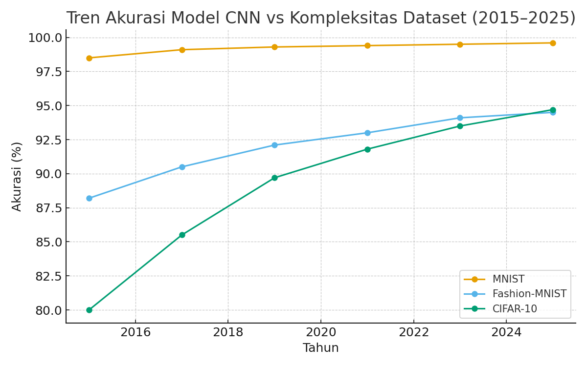

Gambar di samping menampilkan tren peningkatan akurasi model Convolutional Neural Network (CNN) terhadap beberapa dataset populer dari tahun 2015 hingga 2025. Dataset yang dibandingkan antara lain MNIST, Fashion-MNIST, dan CIFAR-10, masing-masing merepresentasikan tingkat kompleksitas visual yang berbeda. Dari grafik terlihat bahwa akurasi model terhadap MNIST telah mencapai titik jenuh (saturation point) sejak tahun 2019. Sebagian besar arsitektur CNN modern, mulai dari LeNet-5 hingga ResNet dan EfficientNet, sudah mampu memperoleh akurasi di atas 99,5%, yang menandakan bahwa dataset ini sudah terlalu mudah untuk dijadikan tolok ukur kecerdasan visual terkini. Hal ini mengindikasikan bahwa MNIST tidak lagi menantang bagi model deep learning modern, karena variasi bentuk digit yang terbatas dan kondisi gambar yang sangat bersih. Sebaliknya, Fashion-MNIST dan CIFAR-10 memperlihatkan tren peningkatan akurasi yang masih signifikan hingga tahun 2025. Fashion-MNIST, yang memuat gambar pakaian hitam-putih berukuran 28x28 piksel, dirancang sebagai drop-in replacement MNIST yang lebih sulit karena memiliki kontur dan tekstur lebih kompleks. Sementara CIFAR-10, yang terdiri dari gambar berwarna 32x32 piksel dari berbagai kategori objek (pesawat, mobil, hewan, dll.), menawarkan tantangan nyata yang lebih mendekati citra dunia nyata. Grafik ini menunjukkan bagaimana relevansi MNIST dalam riset Computer Vision telah bergeser: dari dataset benchmark utama menjadi dataset pengantar pembelajaran. Kini, MNIST lebih sering digunakan untuk Menguji arsitektur baru pada tahap awal sebelum diterapkan ke dataset kompleks, Mengajarkan konsep dasar CNN dan backpropagation, Melakukan sanity check terhadap pipeline pelatihan. Dengan demikian, meskipun MNIST telah “selesai ditaklukkan”, ia tetap menjadi dataset simbolik dalam perjalanan evolusi Computer Vision, terutama sebagai fondasi untuk memahami generalisasi model pada dataset yang lebih sulit dan realistis.
6.1. MNIST sebagai Fondasi Historis
Dataset MNIST pertama kali dikembangkan oleh Yann LeCun sebagai standar pembelajaran jaringan saraf konvolusional. Model-model awal seperti LeNet dan AlexNet memanfaatkan MNIST untuk memvalidasi efektivitas lapisan konvolusional. Hingga kini, MNIST masih digunakan sebagai titik awal untuk pembelajaran dan eksperimen algoritma baru sebelum diterapkan pada dataset yang lebih kompleks seperti ImageNet.
6.2. Kaitannya dengan Arsitektur Modern
MNIST masih sering digunakan untuk pengujian arsitektur CNN, Vision Transformer (ViT), dan model hybrid. Peneliti menggunakan MNIST sebagai dataset kecil untuk memvalidasi ide-ide baru tanpa memerlukan sumber daya komputasi besar. Beberapa penelitian seperti Dosovitskiy et al. (2021) dan Touvron et al. (2021) bahkan menggunakan MNIST untuk demonstrasi awal performa ViT.
6.3. Generalisasi dan Tantangan Dataset Mudah
Karena MNIST mudah dipecahkan, akurasi mendekati 100% sering kali tidak lagi berarti. Fenomena ini mendorong munculnya dataset turunan seperti Fashion-MNIST, KMNIST, MNIST-C, dan EMNIST untuk mengukur kemampuan generalisasi model terhadap data yang lebih beragam.
6.4. Transfer Learning dan Meta-Learning
Dalam riset transfer learning dan meta-learning, MNIST digunakan sebagai domain sumber yang sederhana. Hal ini membantu menilai kemampuan model dalam beradaptasi terhadap gaya tulisan baru, domain berbeda, dan tugas-tugas baru.
6.5. Era Foundation Models
MNIST juga berperan dalam eksperimen awal Diffusion Models dan GAN, berfungsi sebagai dataset prototipe untuk memahami bagaimana model generatif membangun representasi visual dari noise menjadi pola angka yang bermakna.
6.6. Mengapa MNIST Masih Relevan
- Reproducibility: mudah diuji ulang di berbagai sistem.
- Pedagogical Clarity: ideal untuk pengajaran konsep CNN dasar.
- Benchmark Konsisten: hasil antar model mudah dibandingkan.
- Rapid Prototyping: efisien untuk eksperimen cepat.
- Bridge to Complexity: jembatan ke dataset yang lebih menantang.
Referensi (2020–2025)
- Dosovitskiy, A., et al. (2021). An Image is Worth 16x16 Words. ICLR.
- Touvron, H., et al. (2021). Training Data-efficient Image Transformers. ICML.
- Mu, N., & Gilmer, J. (2019). MNIST-C. arXiv:1906.02337.
- Radford, A., et al. (2021). CLIP. arXiv:2103.00020.
- Ho, J., et al. (2020). Denoising Diffusion Probabilistic Models. NeurIPS.
- Cohen, G., et al. (2017). EMNIST. arXiv:1702.05373.
- Clanuwat, T., et al. (2018). KMNIST.
- Xiao, H., et al. (2017). Fashion-MNIST. arXiv:1708.07747.
- Tan, M., & Le, Q. (2021). EfficientNetV2. ICML.
- Liu, Z., et al. (2022). ConvNeXt. CVPR.